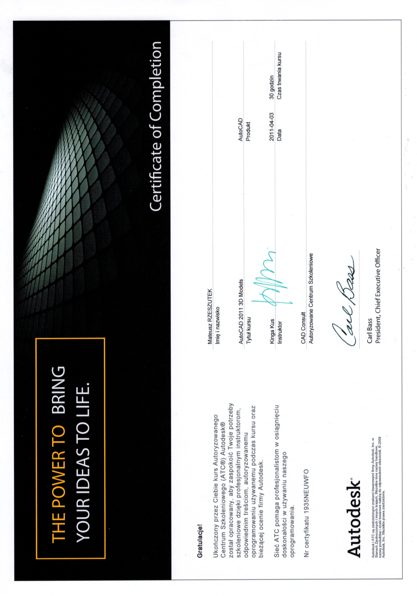

CERTIFICATED
R for data science
Interactive web applications in R (Shiny)
FACH
Financing: FERS.01.05-IP.08-0033/23-00 - European Social Fund
Poland, Krakow | 21-26 September 2025 | 16h

R development
FACH
Financing: FERS.01.05-IP.08-0033/23-00 - European Social Fund
Poland, Krakow | 18–25 July and 10 September 2025 | 32h

Deep Learning in R
FACH
Financing: FERS.01.05-IP.08-0033/23-00 - European Social Fund
Poland, Krakow | 24-26 May, 2025 | 16h
Time series analysis and forecasting in R
FACH
Financing: FERS.01.05-IP.08-0033/23-00 - European Social Fund
Poland, Krakow | 5-12 May, 2025 | 24h

Machine Learning Workshops in R
LabMasters
Financing: POWR.03.05.00-00-Z307/17 - European Social Fund
Poland, Krakow | March 29, 2019 | 90h
Data analysis and visualization in R
LabMasters
Financing: POWR.03.05.00-00-Z307/17 - European Social Fund
Poland, Krakow | October 18, 2018 | 30h
Fundamentals of mathematical statistics in R
LabMasters
Financing: POWR.03.05.00-00-Z307/17 - European Social Fund
Poland, Krakow | October 18, 2018 | 30h
LATEX
Introduction to LaTeX in Overleaf
FACH Sp. z o.o. - organized by the Center of IT Promotion
Financing: POWR.03.05.00-00-Z309/18 - European Social Fund
Poland, Krakow | November 18-19, 2023 | 14h
ANSYS
CFD in ANSYS
MESco Sp. z o.o. - ANSYS Certified Elite Channel Partner
Financing: POWR.03.05.00-00-Z309/18 - European Social Fund
Poland, Krakow | October 23, 2023 | 96h
UPeL AGH University
Using remote techniques in teaching
The Centre of e-Learning and Innovative Education at AGH University
Poland, Krakow | June 21, 2016 | 20h
No. CEL/160621/PO481
Cluster ZEUS
Workshops on the efficient use of the Zeus supercomputer
Academic Computer Centre Cyfronet AGH
Poland, Krakow | March 23, 2015 | 10h
LINUX
Linux Basics Workshop
Academic Computer Centre Cyfronet AGH
Poland, Krakow | March 20, 2015 | 10h
Didactic training
Didactic Improvement Course
AGH University, Faculty of Humanities
Poland, Krakow | 2014 - 2016 | 90h
ArcGIS
ArcGIS Desktop - spatial analyses
Esri Polska Sp. z o.o.
Geoinformation summer school GEOGORCE 2012
Poland, Gorce | September 30, 2012 | 8h
Introduction to ArcGIS Desktop
Esri Polska Sp. z o.o.
Geoinformation summer school GEOGORCE 2012
Poland, Gorce | September 27, 2012 | 8h
Quality Management System
Auditor:
- ISO 9001:2009,
- ISO14001:2005,
- PN-N-18001:2004,
- OHAS 18001:2007
MDG Doradztwo Gospodarcze sp. z o.o.
registry number: MDG-Z-2013/03/51
Poland, Krakow | March 8, 2013 | 30h
Project management
Project management basics
PM sp. z o.o.
Poland, Krakow | November 6, 2011 | 8h
AutoCad
AutoCad 2011 3D models
CAD Consult - authorized training center Autodesk®
no. certificate: 1935NEUWFO
Poland, Krakow | April 4, 2011 | 30h

AutoCad 2011 advanced
CAD Consult - authorized training center Autodesk®
no. certificate: 1530886753
Poland, Krakow | October 12, 2010 | 30h
AutoCad 2011 Beginning
CAD Consult - authorized training center Autodesk®
no. certificate: 1RRIOWPDCU
Poland, Krakow | October 5, 2010 | 30h